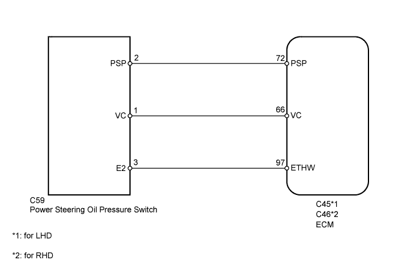
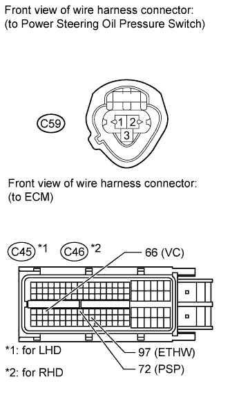

DTC P0550 Power Steering Pressure Sensor Circuit Malfunction |
DTC P0552 Power Steering Pressure Sensor Circuit Low Input |
DTC P0553 Power Steering Pressure Sensor Circuit High Input |
| DTC Code | DTC Detection Condition | Trouble Area |
| P0550 | Power steering oil pressure sensor voltage less than 0.28 V, or more than 4.9 V for 0.5 seconds while engine running. (1 trip detection logic) |
|
| P0552 | Power steering oil pressure sensor voltage less than 0.28 V for 0.5 seconds while engine running. (1 trip detection logic) |
|
| P0553 | Power steering oil pressure sensor voltage more than 4.9 V for 0.5 seconds while engine running. (1 trip detection logic) |
|

| 1.CHECK HARNESS AND CONNECTOR (ECM - POWER STEERING OIL PRESSURE SWITCH) |
 |
Disconnect the ECM connector.
Disconnect the power steering oil pressure switch connector.
Measure the resistance according to the value(s) in the table below.
| Tester Connection | Condition | Specified Condition |
| C59-2 (PSP) - C45-72 (PSP) | Always | Below 1 Ω |
| C59-1 (VC) - C45-66 (VC) | Always | Below 1 Ω |
| C59-3 (E2) - C45-97 (ETHW) | Always | Below 1 Ω |
| C59-2 (PSP) or C45-72 (PSP) - Body ground | Always | 10 kΩ or higher |
| C59-1 (VC) or C45-66 (VC) - Body ground | Always | 10 kΩ or higher |
| Tester Connection | Condition | Specified Condition |
| C59-2 (PSP) - C46-72 (PSP) | Always | Below 1 Ω |
| C59-1 (VC) - C46-66 (VC) | Always | Below 1 Ω |
| C59-3 (E2) - C46-97 (ETHW) | Always | Below 1 Ω |
| C59-2 (PSP) or C46-72 (PSP) - Body ground | Always | 10 kΩ or higher |
| C59-1 (VC) or C46-66 (VC) - Body ground | Always | 10 kΩ or higher |
|
| ||||
| OK | |
| 2.REPLACE POWER STEERING OIL PRESSURE SWITCH |
Replace the power steering oil pressure switch (Click here).
| NEXT | |
| 3.CHECK WHETHER DTC OUTPUT RECURS |
Connect the intelligent tester to the DLC3.
Turn the engine switch on (IG) and turn the tester on.
Enter the following menus: Powertrain / Engine and ECT / DTC.
Read the DTCs.
| Result | Proceed to |
| P0550, P0552 and/or P0553 is output | A |
| No DTC is output | B |
|
| ||||
| A | ||
| ||